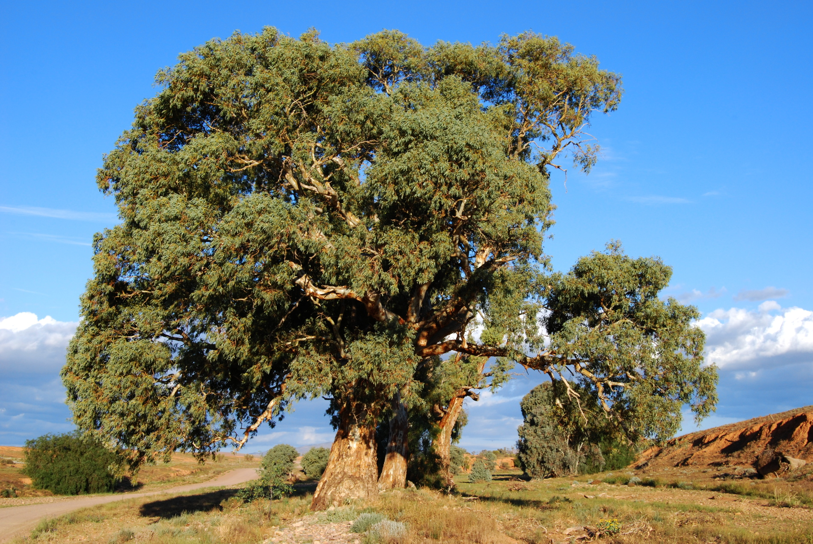
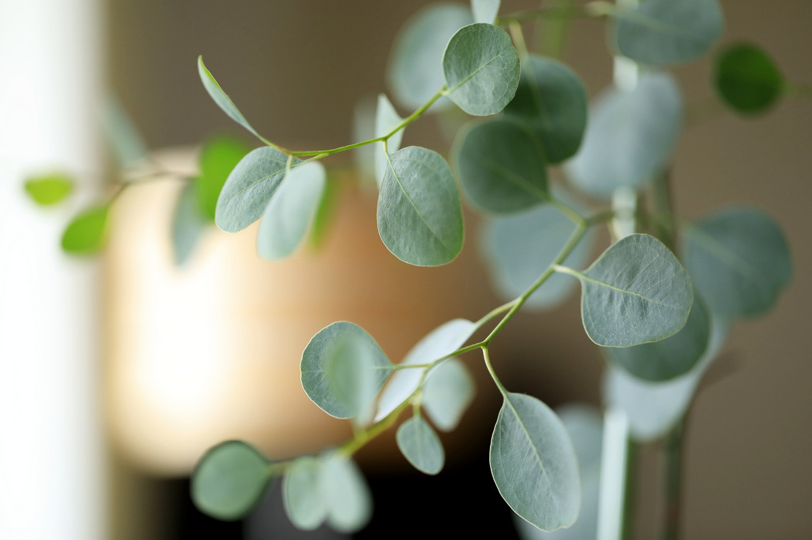

 Евкалі́пт — рід дерев і деяких кущів родини миртові, представники якого насамперед поширені в деревній флорі Австралії. Існує більш ніж 700 видів евкаліптів, більшість походить з Австралії, деякі — з островів Нової Гвінеї та Індонезії, а один вид — з Філіппінських островів. Багато видів були інтродуковані в посушливих районах інших частин світу, зокрема в Каліфорнії, Африці, Південній Європі, Індії та Китаї. Звичайно дерева евкаліптів сягають до 100 метрів заввишки з діаметром стовбура понад 3 метри. Висота евкаліптів різна й залежить від конкретного виду. Звісно, не всі вони досягають таких гігантських розмірів. Є серед них і карлики, що ледве досягають 2-3 метрів заввишки, і навіть чагарники. Уперше європейці побачили евкаліпт на його батьківщині, острові Тасманія, понад 200 років тому. 1777 року його насіння вперше привезли до Англії, де воно й було посіяно. Завдяки цінній деревині і здатності швидко рости евкаліптові ліси культивують майже у всіх тропічних і субтропічних країнах. Добре акліматизувалися ці рослини та в Грузії на Чорноморському узбережжі Кавказу. Тут культивується понад 30 видів. Але в цьому регіоні вони не досягають таких величезних розмірів. (див.: Батумський ботанічний сад)
Евкаліпти — вічнозелені рослини. Їх листя посилено випаровує вологу, а тому ці рослини сприяють осушенню заболочених місцевостей. Через швидкий ріст їм потрібна велика кількість води, що призводить до осушення ґрунту. Один дорослий евкаліпт може протягом року випаровувати 14 т води. Відсутність кущів поблизу евкаліптових лісів пояснюється тим, що евкаліпти своїм величезним корінням забирають з ґрунту воду. У наш час[коли?] найвищими деревами є два королівські евкаліпти. Один з них росте на горі Бау-Бау в Квінсленді та має висоту 99,4 м, а другий — у долині річки Стікс, на острові Тасманія. Його висота сягає 98,1 м. Їх вік 350 і 400 років. Евкаліпт росте дуже швидко і до сторічного віку досягає висоти 100 м. Особливо швидкий ріст відбувається у перше десятиліття, коли щороку дерево виростає на 4-5 м. Потім ріст сповільнюється. Через 20-30 років евкаліпт досягає висоти 35 м при діаметрі стовбура як у 200-річного дуба. Деревна маса 25-річного евкаліпта у 200 разів перевищує деревну масу дуба, що має такий же вік. П'ятирічні евкаліпти утворюють справжній ліс.
 Евкаліпти називають деревами без тіні, оскільки пластини їх листків розташовані паралельно до сонячного проміння і повністю його пропускають. Цікавою особливістю цих дерев є здатність щорічно міняти кору, яка згодом звисає і сповзає зі стовбура у вигляді лахміття. На перший погляд здається, що хтось обдер з дерева кору. Листки евкаліпта кулястого містять летку олію (0,7-2%), основною складовою частиною якої е терпен цінеол, що має окислювальну і бактерицидну дію, терпени (пінен), альдегіди і сесквітерпенові спирти (міртенол, глобулол), смолисті речовини бальзамічної природи, дубильні речовини, фітонциди. Високі (до 100 метрів), переважно смолисті дерева. Листя суцільне, синьо-зелене, пахуче, вигнуте як криві шаблі, повернуті ребром до сонця, внаслідок чого ці дерева майже не дають тіні, листя не опадає, а лущиться і опадає старий шар кори. Цвіт — у щітках або в головчатих суцвіттях; чашечка відвалюється у вигляді кришечки Листові залози багатьох видів евкаліпта, особливо Eucalyptus salicifolia та Eucalyptus globulus, містять у собі від 0,3 до 4,5 % ефірної (евкаліптової) олії, головний компонент якої — цінеол (до 80 %), а також дубильні речовини, галотаніни, кумарова та корична кислоти. Більшість евкаліптів не терплять сильних холодів. Евкаліпти добре себе почувають в різних умовах клімату, але зазвичай пошкоджуються морозом від -5 ° C (23 ° F); Але є і винятки, наприклад два підвиди евкаліпта: E. pauciflora subsp. niphophila та E. pauciflora subsp, який здатний витримати холод і мороз до приблизно -20 ° C (−4 ° F). Кілька інших видів, особливо з високого плато та гір центральної Тасманії, такі як евкаліпт coccifera, Eucalyptus subcrenulata та евкаліпт gunnii, також отримали надзвичайно холодостійкі форми, і їх насіння заготовляється з цих генетично витривалих штамів, а потім висаджується в холодних регіонах світу. Діють як expectorans, secretolyticum, desinficiens, bacteriostaticum, advulnans, antispasmodicum, hemostypticum, tonicum. Застосовують у вигляді відвару: 2 столові ложки подрібнених листків заливають 1 склянкою води, кип'ятять 5 хв., охолоджують. П'ють по 1 столовій ложці 3 рази протягом доби. У великих дозах можуть зумовити подразнення слизової оболонки органів травлення і спричинити блювання, загальну слабкість, судоми. Цим відваром промивають гнійні рани і рани, які погано гояться, спринцюють піхву, полощуть горло при хронічному тонзиліті, роблять інгаляції при простудних хворобах.
навеврх